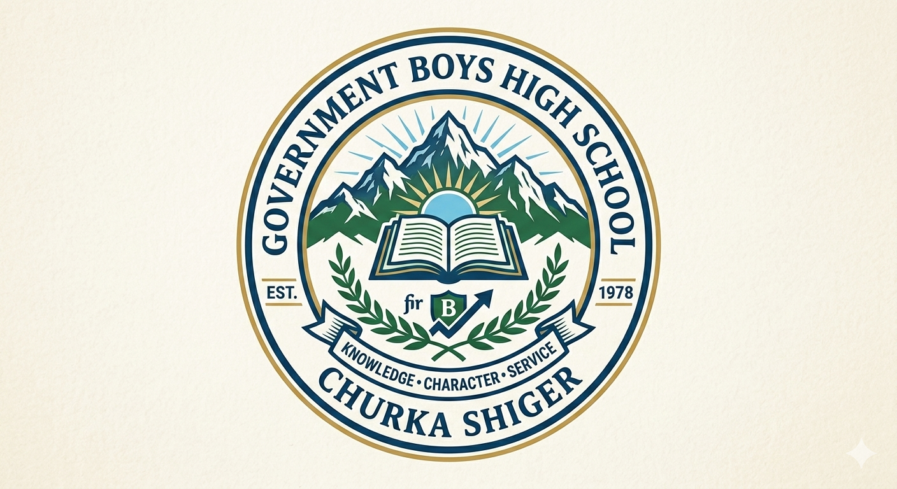

.jpg)

- Admission form
Admissions for the academic session 2026-27 at Government Boys High School Churka are now officially open for Class 6th through Class 10th, and we warmly invite all parents in the region to entrust us with their child’s future. We offer admission in both Science Group and General/Arts Group so that every student can choose a field according to his aptitude, natural talent, and future career goals. The school strictly follows the approved syllabus of the FBISE Textbook Board and the examination rules of FBISE Islamabad. Our vision goes far beyond “just passing exams.” We aim to shape every child into a conscious, ethical, confident, and responsible citizen of Pakistan who will serve the nation tomorrow.
GBHS Churka’s academic environment is unique because we give equal importance to education and character building. The morning assembly is not limited to prayer and PT. Through our “Moral Training Minute,” students learn about honesty, integrity, punctuality, respect for elders, compassion for juniors, cleanliness, and patriotism. Classrooms are spacious, airy, and well-lit. Each room has a whiteboard, soft board, charts, and essential teaching aids. For Science, we have fully equipped Physics, Chemistry, and Biology labs where students perform experiments themselves. The Computer Lab has 25 updated systems, a multimedia projector, UPS, and filtered internet where students learn MS Office, InPage, typing, email, and basic HTML/CSS coding. Our library houses 1500+ books covering Islamic, literary, historical, general knowledge, and course content. The playground includes a cricket pitch, football ground, volleyball court, and a 200-meter athletics track.
The admission process is extremely simple, transparent, and parent-friendly.
Visit the school office Monday to Saturday between 8:00 AM and 1:00 PM to collect the admission form.
The form costs only Rs. 100 as a processing fee. The last date for form submission is 30 April 2026.
Seats are limited, so admissions will be granted on a “first come, first served” basis.
An entrance test will be conducted only for Class 9th Science Group on 5 May 2026 at 9:00 AM, covering basic concepts of English, Mathematics, and Science.
Under GB Government policy, deserving, orphan, special children, and financially weak students are provided free textbooks, school uniform, shoes, bags, and monthly stipends. In addition, under the Zewar-e-Taleem Program, students maintaining 80%+ attendance receive Rs. 300 per month. The school strictly enforces a No Corporal Punishment Policy. Every childs self-respect is protected.
*Required Documents*:
1) Students original NADRA B-Form or Birth Certificate issued by Union Council.
2) Attested photocopy of father/guardian CNIC.
3) 4 recent passport-size photographs with sky-blue background.
4) Original result card and school leaving certificate of the previous class.
5) NOC from DEO in case of transfer.
6) Copy of domicile.
All documents must be attached with the form; otherwise the form will be considered incomplete.
For further information, fee structure, and scholarship details, please check the notice board at the main gate or contact
03089099876,
03239134829.
You can also follow our Facebook page “M SHOAIB ALI” and YouTube channel for updates.
Remember, a strong foundation is the guarantee of success. Collect the form today and take the first step toward your child’s bright future in the peaceful, high-quality, and nurturing environment of GBHS Churka.
- Our Teachers
The real strength of any educational institution is not its building or furniture, but its teachers.
Government Boys High School Churka takes immense pride in its qualified, experienced, dedicated, and professional teaching faculty.
All 18 of our teachers are duly selected and certified by the GB Elementary & Secondary Education Department.
Most faculty members hold http://M.Sc, M.A, BS 4-Year, http://B.Ed, http://M.Ed, or http://M.Phil degrees. For every subject, we have dedicated subject specialists who have complete command over their discipline and are familiar with modern teaching methodologies.
*Faculty Structure*:
In the Science Section we have
2 Physics teacher,
2 Chemistry teacher,
1 Biology teacher, and
1 Mathematics specialist
1 trained IT teachers.
In Languages we have 2 English,
2 Urdu teachers.
For Islamiat and Nazra Quran we have 2 specialist.
For Pakistan Studies, Geography, and History we have 2 senior SSTs.
In Arts we also have 1 Fine Arts and 1 Calligraphy teacher.
Additionally, we have 1 librarian, 1 lab assistant.
Our teaching methodology is “Concept-Based, Activity-Based, and Student-Centered Learning.” We strongly oppose the rote system. Every lesson is explained through real-life examples, local context, group activities, project-based learning, charts, 3D working models, documentaries, and multimedia presentations. After each chapter we conduct an “Exit Slip” activity where students explain in 2 minutes what they learned. Every Friday is “Quiz Friday.” Every month we celebrate “Subject Week” featuring models, speeches, and competitions related to that subject.
*Labs & Resources*: The Physics Lab has complete apparatus for mechanics, optics, and electricity. The Chemistry Lab has test tubes, beakers, chemicals, Bunsen burners, and a fume hood. The Biology Lab has a human skeleton, torso, heart model, compound microscope, and 50+ preserved specimens. The Computer Lab has 25 Core i5 systems, a multimedia projector, 30 Mbps internet, UPS backup, and printing facility. Here students learn MS Office, InPage, Scratch Programming, HTML, CSS, and Python basics. The Library has 1500+ books, newspapers, magazines, and a “Book Reading Corner” where students read during lunch break.
*Professional Development*: Our teachers attend trainings by DCTE, PITE, and British Council every year. At school level, we organize “CPD Day” every month where teachers share lesson plans, discuss new teaching strategies, and conduct peer observations. The Principal, as an “Instructional Leader,” observes 2 teachers’ classes every week and provides constructive feedback.
*Teacher-Student Relationship*: At GBHS Churka, the teacher-student relationship is like father and son. The “No Corporal Punishment Policy” is implemented 100%. Respecting the child, listening to him, and valuing his opinion is every teacher’s responsibility. For weak students, we run a “Zero Period” and “After School Remedial Program” absolutely free. A Parent-Teacher Meeting is held every 2 months where a complete report of the child’s academic performance, attendance, class participation, homework, moral aspects, and co-curricular activities is shared with parents.
Our teachers are not limited to the classroom. Debate, naat, qirat, essay writing, poster making, science exhibitions, cricket, football, athletics, and scouting are all prepared under teachers’ supervision. Many teachers have received “Best Teacher Awards” at district and provincial levels. We believe: “A good teacher does not advise, he teaches how to live, and does not just show the path, he builds the path.” That is why GBHS Churka students stand out in character, education, and confidence across the region.
- Gallery
The campus of Government Boys High School Churka is a beautiful blend of education, character building, natural beauty, and modern facilities. When you enter through the main gate, a clean, flower-filled lawn and Pakistan’s waving flag welcome you. The school’s photo gallery is living proof that here, along with bricks and cement, children’s dreams are also built.
*Academic Block*:
Our building has two floors with 18 spacious classrooms. Each room has 6 large windows ensuring excellent light and ventilation. Every class accommodates 35-40 students with standard-size desks, a whiteboard, soft board, dustbin, ceiling fans, and a wall clock. On the walls we have created a “Wall of Knowledge” where students post charts and quotations every week. The principal’s office, staff room, clerk office, and examination hall are also in this block.
*Science Labs*:
The Physics Lab has Galileo telescope models, inclined planes, lens apparatus, ammeters, voltmeters, and electric circuit boards. The Chemistry Lab has test tubes, beakers, measuring cylinders, a periodic table chart, fume hood, and safety kit. The Biology Lab has a human skeleton, muscular torso, heart model, compound microscope, and 50+ preserved specimens. Every lab has a fire extinguisher and first aid box. Photos show Class 10th students performing “Acid-Base Titration” themselves.
*Computer Lab & Library*:
The Computer Lab has 25 Dell Core i5 systems, a 65-inch smart LED, multimedia projector, 5KV UPS, and 30 Mbps PTCL internet. Charts on “Parts of Computer,” “Cyber Safety Rules,” and “Famous Muslim Scientists” are displayed on the walls. Gallery pictures show students coding, making CVs in MS Word, and designing posters in Canva. The Library contains 1500+ books including Dars-e-Nizami texts, Seerat-un-Nabi, Encyclopedia Britannica, Children’s Knowledge Bank, and all KP Textbook Board course books. A “Reading Corner” with bean bags allows students to read comfortably.
*Ground & Sports*:
The school’s main Assembly Ground covers 2 kanals where morning assembly is held daily at 7:45 AM. It has a stage, sound system, and flag post. Alongside is a 400-meter raw track. For sports we have a cemented cricket pitch, football goal posts, volleyball and badminton courts. Gallery photos from Sports Gala 2025 show students running the 100m race, teams competing in tug-of-war, and the cricket team lifting the trophy after winning the final.
*Events Gallery*:
Photos from Youm-e-Walidain 2025 show children presenting cards to their parents and delivering speeches on “The Greatness of Mother.” 14 August pictures show the entire school decorated with green crescent flags and students performing national songs. In the Science Exhibition, students stand with models like “Solar Water Heater,” “Automatic Street Light using LDR,” “Earthquake Alarm,” “Water Filtration Plant,” and “Smart Blind Stick.” DEO Peshawar himself is seen inspecting the models. Prize Distribution photos capture the pride on position holders’ faces, tears of joy in parents’ eyes, and satisfaction on teachers’ faces.
*Clean & Green Initiatives*:
The gallery also includes photos from “Plantation Drive 2025” where each student planted a tree with his name. In “Cleanliness Drive” pictures, students are sweeping and polishing their school with brooms and shovels. On the “Wall of Kindness,” children place warm clothes and stationery for those in need.
All these pictures prove that Government Boys High School Churka is not just a structure of walls, but a living, active, child-loving institution that builds the future, where every photo has a story, effort, and dream behind it
In the school gallery you can see: spacious bright classrooms, Science Lab, Computer Lab, Library, Playground, and Assembly area. Photos of annual events like Sports Gala, Parents’ Day, Science Exhibition, and Prize Distribution Ceremony are also available. The clean environment and green campus provide the best atmosphere for students' health and education.
- Some IT Stdents
The students of Government Boys High School Churka are our pride, our asset, and the bright future of Pakistan. Despite belonging to the rural area of Churka, despite limited resources and challenges, our children are second to none in courage, hard work, self-confidence, and dedication compared to students of any urban or private school.
But GBHS Churka’s mission is not just “percentages and grades” but “character building, personality development, and national training.” Therefore, every day in assembly we conduct a “Moral Training Minute” where a verse from the Quran, a Hadith, a saying of Quaid-e-Azam, or a quote from an elder is read, and in its light students are taught truth, integrity, punctuality, respect for elders, compassion for juniors, cleanliness, hard work, tolerance, and patriotism. “Student of the Month” award is given to the child who excels in both academics and conduct.
*Social Responsibility*:
GBHS Churka students plant 20-25 new trees every month under the “Clean & Green Churka” campaign and take care of them. The school has a “Wall of Kindness” where children place extra clothes, shoes, books, and stationery for needy students. During the 2022 and 2024 floods, our students went door to door collecting rations, clothes, and medicines and delivered them to victims. In winter we run a “Warm Clothes Drive.” In Ramadan, students volunteer at “Iftar Dastarkhwan.”
*Leadership & Discipline*:
The school has a “Student Council” including Head Boy, Deputy Head Boy, Class Prefects, Discipline Incharge, Sports Captain, and Library Incharge, all elected by students. This council conducts assembly, checks attendance, monitors cleanliness, and helps juniors. We also have a “House System”: Jinnah House, Iqbal House, Sir Syed House, and Liaquat House. Each house has its own color, slogan, and captain. At year end, the “Best House Trophy” is awarded.
In short, Government Boys High School Churka students excel in academics, ethics, skills, sports, technology, and social service. These are the youth who tomorrow will become doctors, engineers, teachers, scientists, soldiers, officers, and great citizens to illuminate Pakistan’s name.
- ABOUT US
Assalam-o-Alaikum! We are the IT Society of Government Boys High School Churka – 14 passionate students who picked up the keyboard and mouse alongside chalk and slate. Our team consists of Class 9th and 10th students working under the guidance of Sir Ibrahim Trupi, Computer Science SST, learning coding, graphic designing, video editing, and problem-solving. Our journey began in 2024 when the school had only 3 old P-4 computers, no internet, and the word “website” was only read in books. But we dreamed of putting our school on the digital map.
*How We Started*
: We began with “What is a Computer” on YouTube. Then learned MS Paint, MS Word, and PowerPoint. When the DDO Office gave 10 new computers at the end of 2024, our morale boosted. We started staying 1 hour after school every day for practice. Sir Kamran taught us basic HTML and CSS tags. We learned from W3Schools and FreeCodeCamp. We learned poster design in Canva. We learned mobile video editing. Today, Alhamdulillah, we run the school’s official website, online admission portal, digital result card system, SMS attendance alert system, YouTube channel, and Facebook page.
*Our Projects*:
1) *GBHS Churka Official Website* – Built with HTML, CSS, and a little JavaScript. It has Home, About, Admission, Faculty, Gallery, News, and Contact pages.
2) *Online Admission Form* – Integrated Google Forms with the website so parents can fill forms from home.
3) *Digital Result Card Generator* – Created a system using Excel + VBA that generates the entire class’s result cards in PDF with one click. This reduced teachers’ 2-day work to 10 minutes.
4) *Smart School Manager Software* – Built in Visual Basic. It includes student entry, fee record, attendance, exam marks, and report cards. This software won 1st position and Rs. 15,000 cash prize at the District Science Exhibition 2025.
5) *School YouTube Channel* – “GBHS Churka Official” where we upload assembly, events, student speeches, and science project videos.
6) *Social Media Management* – Post daily attendance, homework, date sheets, and event photos on the Facebook page.
*Team Culture*:
Every Friday we hold a “Code & Chai” session. For the first 30 minutes we learn a new topic – like Python loops or a new Canva feature. Then over tea we discuss our bugs and help each other. Seniors teach juniors under the “Each One Teach One” policy. We teach Class 6th kids Paint, typing, and “Internet Safety Rules.” Our mission is that no child from Churka should be left behind in technology.
*Future Plans*:
We are now learning Flutter to launch the school’s own Android app with attendance, homework, results, and notifications. We are also learning freelancing. Two students have created Fiverr accounts and started Canva design work. Our dream is to make every child in our village capable of online earning so they can support themselves and their families.
*Contact Us*:
If you see any error in our website, want a new feature, or want to give us a project, please email us. Your opinion, criticism, and suggestions are our guiding light.
*Email*:
fmnashad0@gmail.com
*WhatsApp*:
03239134829
*YouTube*:
webhacker@03/web hacker
*Team Slogan*:
“The keyboard is our pen,
code is our language,
and education is our mission.”